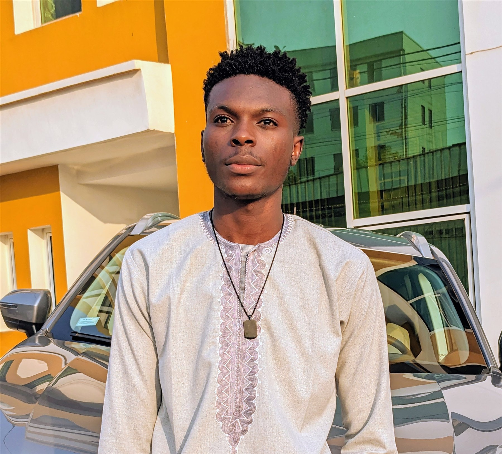
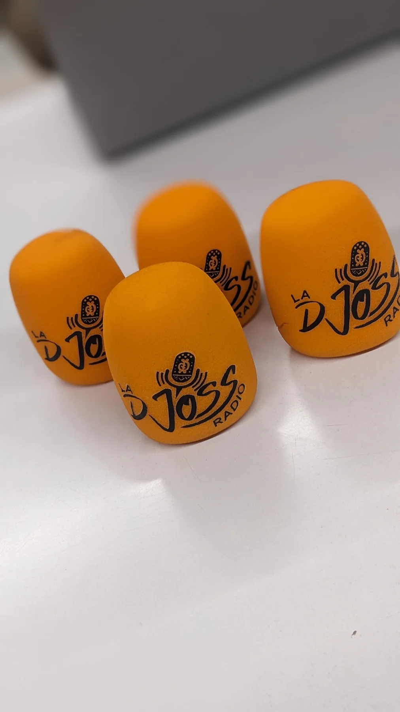
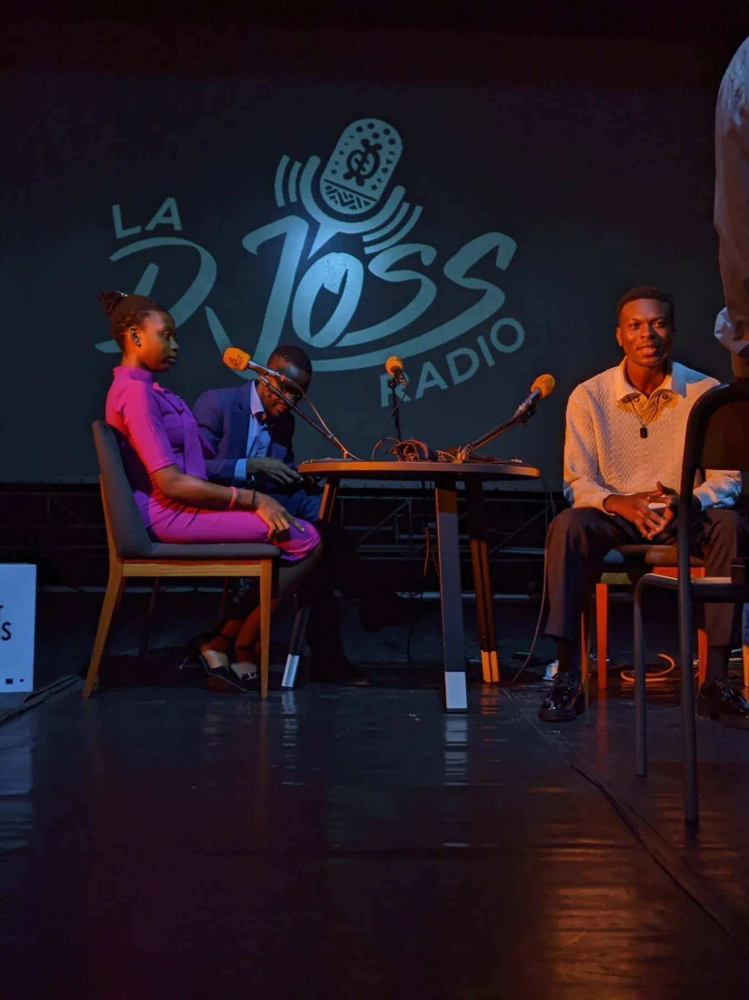
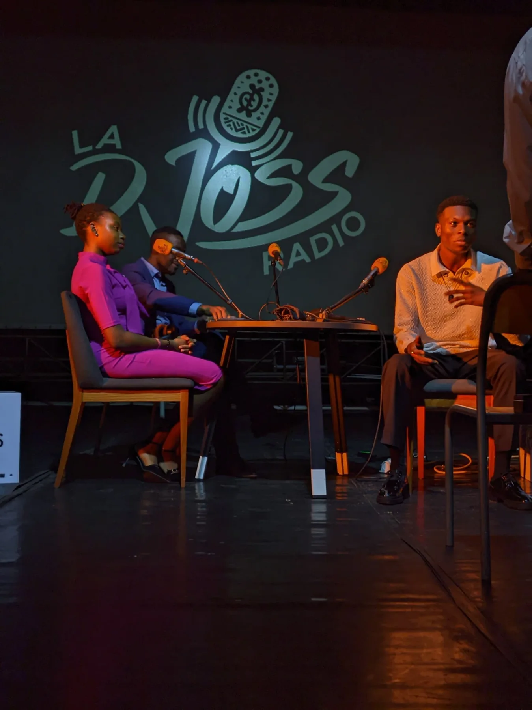
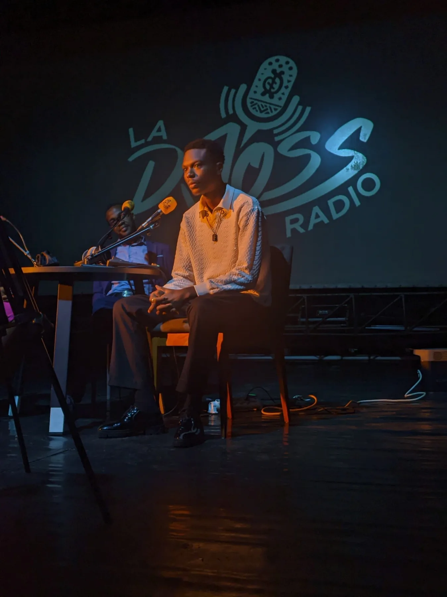
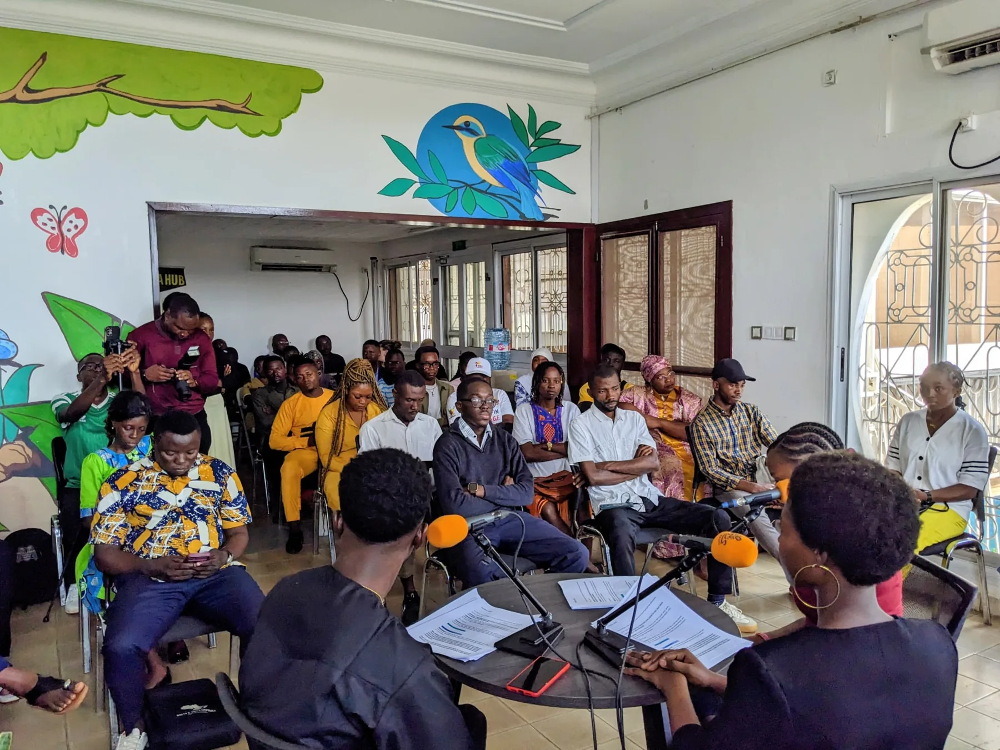
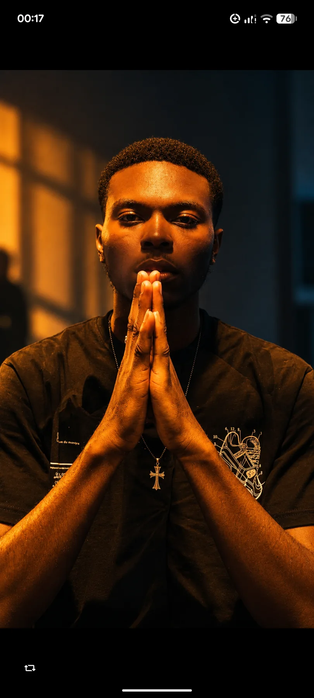
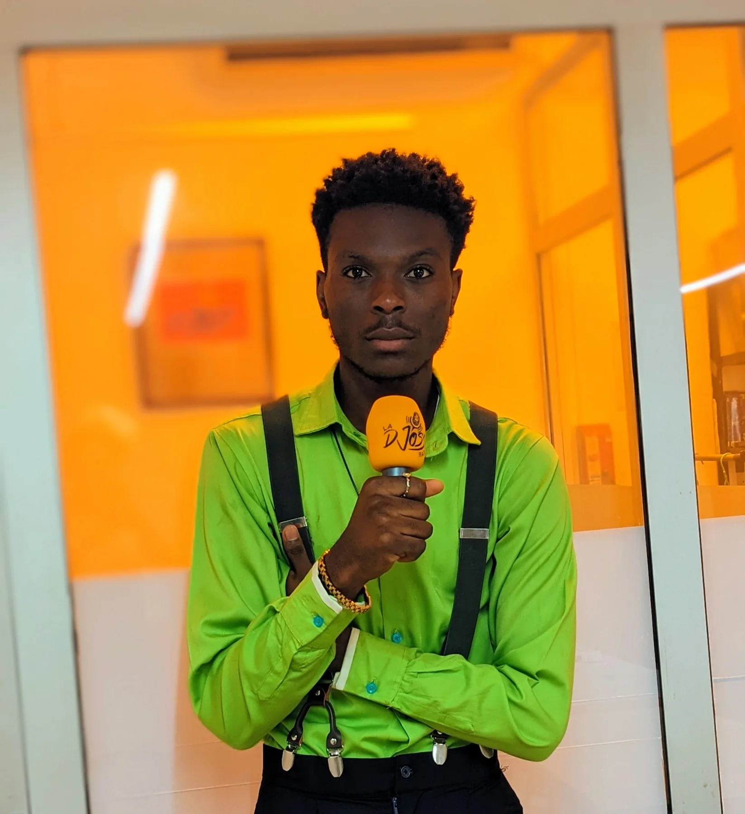

Un homme. Plusieurs scènes. Une même curiosité.
Les Univers
d'Ulrich Mbesse
Ingénierie, radio, cinéma, voix : entrez dans des univers qui se répondent. Le premier point de rencontre, c'est l'homme.
Rencontrer Ulrich↘
Un parcours, quatre portes d'entrée
La personne
D'abord Ulrich.
Ensuite, ses univers.
Ingénieur en informatique, créateur de contenus et entrepreneur digital basé à Yaoundé, Ulrich incarne la convergence parfaite entre la rigueur des systèmes techniques et la puissance de la narration artistique. Entre le développement de plateformes web, la production de fictions sonores et de films engagés comme Fragments, et l'exploration des usages de l'intelligence artificielle à travers Le Guide IA, il navigue avec aisance entre code, micro et réalisation. Animé par un esprit multidisciplinaire et un ancrage culturel fort, il conçoit des projets audacieux où la technologie et la créativité se rejoignent pour donner du sens et impacter sa génération.
Un parcours qui
change de décor.
Ingénieur des travaux informatiques diplômé de l'IAI-Cameroun en 2024, Ulrich a effectué des stages à Digital Generation (2023) et à l'Assemblée Nationale (DPPL, 2024). En 2026, il est en stage d'appui informatique au Ministère de l'Éducation de Base. Son CV détaille le parcours et les compétences en systèmes et réseaux.
Repères biographiques repris du CV fourni.
Quatre univers.
Un même élan.
Un carrefour pour explorer les facettes d'un même parcours.
Ingénierie
La rigueur du terrain, la vision d'ensemble et le goût des solutions concrètes.
Découvrir le parcours ↗ 02 / LE DIRECTRadio & animation
À Djoss Radio, Ulrich est animateur et présentateur de l'émission en ligne Jusqu'à la gare.
Écouter les émissions ↗ 03 / LE RÉCITCinéma
Fragments, projet personnel : Ulrich y est personnage principal, réalisateur et monteur.
Voir Fragments ↗ 04 / LA VOIXVoix & fictions
Comédien voix dans les fictions sonores où son nom est mentionné au générique.
Voir les fictions ↗Djoss Radio · Animation & présentation
La parole circule.
Voici uniquement les épisodes de Jusqu'à la gare dont la description crédite Ulrich.



Dans le feu de l'émission
Sur scène,
au micro.
Quelques instants de présentation et d'échange à La Djoss Radio.




Une création · Mini-série web
Fragments
Projet personnel, mini-série web dans laquelle Ulrich est personnage principal, réalisateur et monteur. Découvre les épisodes dans la playlist.
Voir la playlist Fragments ↗
 Voir un épisode de Fragments ↗
Voir un épisode de Fragments ↗Comédien voix · Fiction sonore
L'image se devine.
Sélection des fictions sonores dont la description crédite Ulrich, comme voix d'acteur ou aux bruitages.



Contact & collaborations
Une idée en tête ?
Choisis ton canal préféré et prépare un premier message à Ulrich.
Le parcours en un regard.
CV en français · Version datée 17-11-2026.